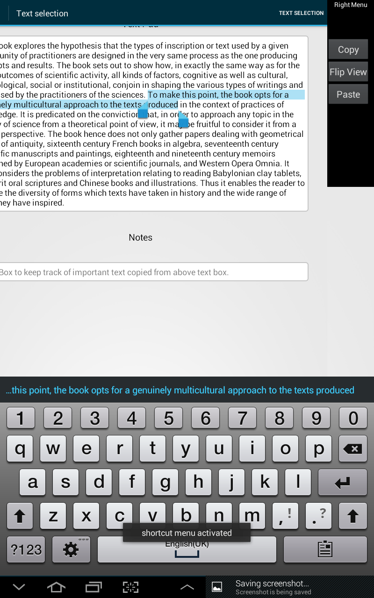
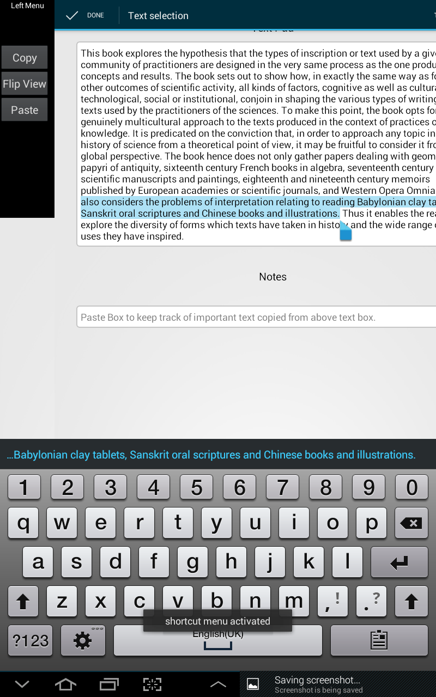
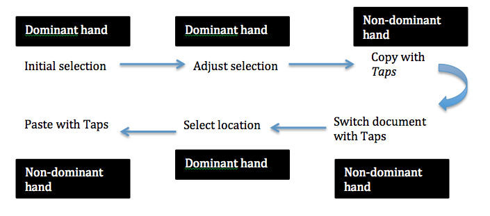

<main class="">
<div class="container">
  <table cellpadding="10">
  <tr>
    <td width="30%" align ="left" > <a href="#" id="pop"></a>
      <p>BipadPlus menu activation</p></td>
    <td width="40%" align ="justify" valign="top"  ><h3>Bipad plus: Text editor with non-dominat hand controls</h3><p><i>In this project, based on the design priciples of BiTouch and BiPad [1], I have designed a text editor with Bimanual interaction. Copy/paste/cut are most commonly used functions needed in text editors. Right now in text editors in tablets and smart phones, you have to long press on the word and then the menu for copy/paste appear on the word. In Bipad plus text editor, I used non dominant hand for activating copy/paste menu beased on user's hand position. I have implemented touch activation of bimanual chords on the right side for the right-handed users (non-dominant hand is placed on the right activation area) and activation on the left side for the left-handed users (non-dominant hand is placed on the left activation area). I have implemented adaptation for BiPad panel depending on the handedness of the user.
  <br>
  </td>
  <tr>
    <td width="70%" align ="left">
      <p></p>
    </td>
   
  </tr>
  
</table>

     
<div data-editable-type="text" id="text_1" class="  " data-force-html-mode="false" data-content-module-unique-id="">

      <p><i>[1] Julie Wagner, Stéphane Huot, and Wendy Mackay. 2012. BiTouch and BiPad: designing bimanual interaction for hand-held tablets. In Proceedings of the SIGCHI Conference on Human Factors in Computing Systems (CHI '12).</i></p>    
</div>
    </div>
  </main>